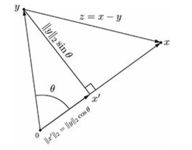

<!DOCTYPE html>


<html lang="zh-CN">


<head>
  <meta name="baidu-site-verification" content="codeva-NSg7ynviLa" />
  <meta charset="utf-8" />
    
  <meta name="viewport" content="width=device-width, initial-scale=1, maximum-scale=1" />
  <title>
    内积与角度及正交 |  
  </title>
  <meta name="generator" content="hexo-theme-ayer">
  
  <link rel="shortcut icon" href="/images/mojie.jpg" />
  
  
<link rel="stylesheet" href="/dist/main.css">

  <link rel="stylesheet" href="https://cdn.jsdelivr.net/gh/Shen-Yu/cdn/css/remixicon.min.css">
  
<link rel="stylesheet" href="/css/custom.css">

  
  <script src="https://cdn.jsdelivr.net/npm/pace-js@1.0.2/pace.min.js"></script>
  
  

  

<link rel="alternate" href="/atom.xml" title="null" type="application/atom+xml">
</head>

</html>

<body>
  <div id="app">
    
      
    <main class="content on">
      <section class="outer">
  <article
  id="post-内积与角度及正交"
  class="article article-type-post"
  itemscope
  itemprop="blogPost"
  data-scroll-reveal
>
  <div class="article-inner">
    
    <header class="article-header">
       
<h1 class="article-title sea-center" style="border-left:0" itemprop="name">
  内积与角度及正交
</h1>
 

    </header>
     
    <div class="article-meta">
      <a href="/posts/c511f635/" class="article-date">
  <time datetime="2022-05-11T14:27:51.000Z" itemprop="datePublished">2022-05-11</time>
</a> 
  <div class="article-category">
    <a class="article-category-link" href="/categories/%E7%90%86%E8%AE%BA%E5%AD%A6%E4%B9%A0/">理论学习</a> / <a class="article-category-link" href="/categories/%E7%90%86%E8%AE%BA%E5%AD%A6%E4%B9%A0/%E7%BA%BF%E6%80%A7%E4%BB%A3%E6%95%B0/">线性代数</a>
  </div>
  
<div class="word_count">
    <span class="post-time">
        <span class="post-meta-item-icon">
            <i class="ri-quill-pen-line"></i>
            <span class="post-meta-item-text"> 字数统计:</span>
            <span class="post-count">987</span>
        </span>
    </span>

    <span class="post-time">
        &nbsp; | &nbsp;
        <span class="post-meta-item-icon">
            <i class="ri-book-open-line"></i>
            <span class="post-meta-item-text"> 阅读时长≈</span>
            <span class="post-count">4 分钟</span>
        </span>
    </span>
</div>
 
    </div>
      
    <div class="tocbot"></div>


  
    <div class="article-entry" itemprop="articleBody">
       
  <link rel="stylesheet" type="text/css" href="https://cdn.jsdelivr.net/hint.css/2.4.1/hint.min.css"><p>第一次看到余弦定理的证明过程，记录一下。</p>
<span id="more"></span>
<h1>内积定义</h1>
<p>本文中，一般字母表示向量，希腊字母表示标量。</p>
<p>内积是一个实数函数，其将两个向量映射为一个标量，记为 $&lt;x,y&gt;$ ，内积满足下面的定理：对于同一向量空间的任意三个向量 $x,y,x$ ，及任意一个标量 $\alpha$ ，存在<br>
$$<br>
\begin{aligned}<br>
&amp;\langle x, x\rangle \geq 0 \<br>
&amp;\langle x, x\rangle=0 \text { if and only if } x=0 \<br>
&amp;\langle x+y, z\rangle=\langle x, z\rangle+\langle y, z\rangle \<br>
&amp;\langle\alpha x, y\rangle=\alpha\langle x, y\rangle \<br>
&amp;\langle x, y\rangle=\langle y, x\rangle<br>
\end{aligned}<br>
$$<br>
<strong>标准向量内积</strong> (<em>standard inner product</em>) 定义如下：<br>
$$<br>
\langle x, y\rangle=x^{\top} y=\sum_{k=1}^{n} x_{k} y_{k} .<br>
$$<br>
标准向量内积和欧几里得范数存在以下关系：<br>
$$<br>
\sqrt{\langle x, x\rangle}=|x|_{2}<br>
$$</p>
<h1>余弦定理</h1>
<p>下面我们采用勾股定理来证明余弦定理，假设向量 $x$ 和 $y$ 的夹角为 $\theta$ ，设 $z=x-y$ ，如下图，我们做一条中垂线。</p>
<p></p>
<p>根据勾股定理，我们有<br>
$$<br>
\begin{aligned}<br>
|z|<em>{2}^{2} &amp;=\left(|y|</em>{2} \sin \theta\right)^{2}+\left(|x|<em>{2}-|y|</em>{2} \cos \theta\right)^{2} \<br>
&amp;=|x|<em>{2}^{2}+|y|</em>{2}^{2}-2|x|<em>{2}|y|</em>{2} \cos \theta<br>
\end{aligned}<br>
$$<br>
同时，我们有<br>
$$<br>
|z|<em>{2}^{2}=|x-y|</em>{2}^{2}=(x-y)^{\top}(x-y)=x^{\top} x+y^{\top} y-2 x^{\top} y<br>
$$<br>
比较二式，我们得到<br>
$$<br>
x^{\top} y=|x|<em>{2}|y|</em>{2} \cos \theta<br>
$$<br>
或者写成<br>
$$<br>
\cos \theta=\frac{x^{\top} y}{|x|<em>{2}|y|</em>{2}}<br>
$$<br>
因此我们有 Cauchy–Schwartz 不等式，即：<br>
$$<br>
\left|x^{\top} y\right| \leq|x|<em>{2} \mid y |</em>{2}<br>
$$</p>
<h1>两个向量正交</h1>
<p>如果两个向量之间的角度为直角，此时我们称两个向量正交。</p>
<p>根据上面的公式 $x^{\top} y=|x|<em>{2}|y|</em>{2} \cos \theta$ ，我们知道两个向量正交，等价于其内积为零，即 $x^{\top} y= 0$ 。</p>
<h1>两个子空间正交</h1>
<p>设 $X$ 和 $Y$ 是 $\mathbf{R}^{n}$ 的两个子空间，如果对每一 $\mathbf{x} \in X$ 和 $\mathbf{y} \in Y$ 均有 $\mathbf{x^{\top}y = 0}$ ，则称  $X$ 和 $Y$ 是正交的，记作 $X \perp Y$ 。</p>
<p>举个例子，<strong>矩阵 $\mathbf{A}$ 的行空间与其零空间正交</strong>。证明如下，根据零空间定义，我们有 $\mathbf{Ax = 0}$ ，根据矩阵乘法，我们得到 矩阵 $\mathbf{A}$ 的每一行与 $\mathbf{x}$ 的内积均为 0，即矩阵 $\mathbf{A}$ 的每一行均与 $\mathbf{x}$ 正交。由于矩阵 $\mathbf{A}$ 的行空间是矩阵 $\mathbf{A}$ 的所有行的线性组合，因此易得矩阵 $\mathbf{A}$ 的行空间与其零空间正交。</p>
<p>性质：对于两个正交的子空间  $X$ 和 $Y$ ，其交集为 ${\mathbf{0}}$ 。</p>
<p>证明：对于 $X$ 和 $Y$ 的交集的元素，设 $x \in X  \cap Y$ ，则必须满足其自身与自身正交，即  $\mathbf{x^{\top}x = 0}$ ，因此 $\mathbf{x = 0}$ 。</p>
<h2 id="正交补">正交补</h2>
<p>令  $Y$ 是 $\mathbf{R}^{n}$ 的子空间， $\mathbf{R}^{n}$ 中所有与 $Y$ 中每一向量正交的向量集合称为 $Y$ 的正交补，记为 $Y^{\perp}$ ，即<br>
$$<br>
Y^{\perp} = { x \in \mathbf{R}^{n} | \mathbf{x^{T}y} = 0 , \text{ for every } \mathbf{y} \in Y}<br>
$$<br>
而且  $Y^{\perp}$ 也是一个子空间，根据加法和标量乘法原则证明如下：</p>
<p>设 $\mathbf{x} \in Y^{\perp}$, 且 $\alpha$ 为一个标量, 则对任意 $\mathbf{y} \in Y$,<br>
$$<br>
(\alpha \boldsymbol{x})^{\mathrm{T}} \boldsymbol{y}=\alpha\left(\boldsymbol{x}^{\mathrm{T}} \boldsymbol{y}\right)=\alpha \cdot 0=0<br>
$$<br>
因此 $\alpha \mathbf{x} \in Y^{\perp}$。</p>
<p>若 $\mathbf{x}<em>{1}$ 和 $\mathbf{x}</em>{2}$ 为 $Y^{\perp}$ 的元素, 则对每一个 $\mathbf{y} \in Y$, 有<br>
$$<br>
\left(\boldsymbol{x}<em>{1}+\boldsymbol{x}</em>{2}\right)^{\mathrm{T}} \boldsymbol{y}=\boldsymbol{x}<em>{1}^{\mathrm{T}} \boldsymbol{y}+\boldsymbol{x}</em>{2}^{\mathrm{T}} \boldsymbol{y}=0+0=0<br>
$$<br>
因此 $\boldsymbol{x}<em>{1}+\boldsymbol{x}</em>{2} \in Y^{\perp}$ 。</p>
<p>于是得证  $Y^{\perp}$ 也是  $\mathbf{R}^{n}$ 的子空间。</p>
<p>我们可以进一步证明，矩阵 $\mathbf{A}$ 的行空间与其零空间互为正交补。</p>
<h1>参考文献</h1>
<ol>
<li>Calafiore G C, El Ghaoui L. Optimization models[M]. Cambridge university press, 2014.</li>
<li>Leon S J, Bica I, Hohn T. Linear algebra with applications[M]. Upper Saddle River, NJ: Pearson Prentice Hall, 2006.</li>
</ol>
 
      <!-- reward -->
      
    </div>
    

    <!-- copyright -->
    
    <div class="declare">
      <ul class="post-copyright">
        <li>
          <i class="ri-copyright-line"></i>
          <strong>版权声明： </strong>
          
          本博客所有文章除特别声明外，著作权归作者所有。转载请注明出处！
          
        </li>
      </ul>
    </div>
    
    <footer class="article-footer">
       
  <ul class="article-tag-list" itemprop="keywords"><li class="article-tag-list-item"><a class="article-tag-list-link" href="/tags/%E7%90%86%E8%AE%BA%E5%AD%A6%E4%B9%A0/" rel="tag">理论学习</a></li><li class="article-tag-list-item"><a class="article-tag-list-link" href="/tags/%E7%BA%BF%E6%80%A7%E4%BB%A3%E6%95%B0/" rel="tag">线性代数</a></li></ul>

    </footer>
  </div>

   
  <nav class="article-nav">
    
      <a href="/posts/930f86ce/" class="article-nav-link">
        <strong class="article-nav-caption">上一篇</strong>
        <div class="article-nav-title">
          
            证明det(AB)=det(A)det(B)
          
        </div>
      </a>
    
    
      <a href="/posts/ae89860e/" class="article-nav-link">
        <strong class="article-nav-caption">下一篇</strong>
        <div class="article-nav-title">MCMC算法</div>
      </a>
    
  </nav>

  
   
     
</article>

</section>
      <footer class="footer">
  <div class="outer">
    <ul>
      <li>
        Copyrights &copy;
        2019-2026
        <i class="ri-heart-fill heart_icon"></i> Vincere Zhou
      </li>
    </ul>
    <ul>
      <li>
        
        
        <span>
  <span><i class="ri-user-3-fill"></i>访问人数:<span id="busuanzi_value_site_uv"></span></s>
  <span class="division">|</span>
  <span><i class="ri-eye-fill"></i>浏览次数:<span id="busuanzi_value_page_pv"></span></span>
</span>
        
      </li>
    </ul>
    <ul>
      
    </ul>
    <ul>
      
    </ul>
    <ul>
      <li>
        <!-- cnzz统计 -->
        
      </li>
    </ul>

    <!-- 与只只在一起天数 -->
	<ul>
		<li><span id="lovetime_span"></span></li>
	</ul>
    <script type="text/javascript">			
        function show_runtime() {
            window.setTimeout("show_runtime()", 1000);
            X = new Date("03/04/2021 22:11:00");
            Y = new Date();
            T = (Y.getTime() - X.getTime());
            M = 24 * 60 * 60 * 1000;
            a = T / M;
            A = Math.floor(a);
            b = (a - A) * 24;
            B = Math.floor(b);
            c = (b - B) * 60;
            C = Math.floor((b - B) * 60);
            D = Math.floor((c - C) * 60);
            lovetime_span.innerHTML = "只只和男朋友在一起了 " + A + "天" + B + "小时" + C + "分" + D + "秒"
        }
        show_runtime();
    </script>

  </div>
</footer>
      <div class="float_btns">
        <div class="totop" id="totop">
  <i class="ri-arrow-up-line"></i>
</div>

      </div>
    </main>
    <aside class="sidebar on">
      <button class="navbar-toggle"></button>
<nav class="navbar">
  
  <div class="logo">
    <a href="/"></a>
  </div>
  
  <ul class="nav nav-main">
    
    <li class="nav-item">
      <a class="nav-item-link" href="/">主页</a>
    </li>
    
    <li class="nav-item">
      <a class="nav-item-link" href="/archives">归档</a>
    </li>
    
    <li class="nav-item">
      <a class="nav-item-link" href="/categories">分类</a>
    </li>
    
    <li class="nav-item">
      <a class="nav-item-link" href="/tags">标签</a>
    </li>
    
    <li class="nav-item">
      <a class="nav-item-link" href="/friends">友链</a>
    </li>
    
    <li class="nav-item">
      <a class="nav-item-link" href="/about">关于</a>
    </li>
    
  </ul>
</nav>
<nav class="navbar navbar-bottom">
  <ul class="nav">
    <li class="nav-item">
      
      <a class="nav-item-link nav-item-search"  title="搜索">
        <i class="ri-search-line"></i>
      </a>
      
      
      <a class="nav-item-link" target="_blank" href="/atom.xml" title="RSS Feed">
        <i class="ri-rss-line"></i>
      </a>
      
    </li>
  </ul>
</nav>
<div class="search-form-wrap">
  <div class="local-search local-search-plugin">
  <input type="search" id="local-search-input" class="local-search-input" placeholder="Search...">
  <div id="local-search-result" class="local-search-result"></div>
</div>
</div>
    </aside>
    <script>
      if (window.matchMedia("(max-width: 768px)").matches) {
        document.querySelector('.content').classList.remove('on');
        document.querySelector('.sidebar').classList.remove('on');
      }
    </script>
    <div id="mask"></div>

<!-- #reward -->
<div id="reward">
  <span class="close"><i class="ri-close-line"></i></span>
  <p class="reward-p"><i class="ri-cup-line"></i>请我喝杯茶吧~</p>
  <div class="reward-box">
    
    <div class="reward-item">
      
      <span class="reward-type">支付宝</span>
    </div>
    
    
    <div class="reward-item">
      
      <span class="reward-type">微信</span>
    </div>
    
  </div>
</div>
    
<script src="/js/jquery-2.0.3.min.js"></script>


<script src="/js/lazyload.min.js"></script>

<!-- Tocbot -->


<script src="/js/tocbot.min.js"></script>

<script>
  tocbot.init({
    tocSelector: '.tocbot',
    contentSelector: '.article-entry',
    headingSelector: 'h1, h2, h3, h4, h5, h6',
    hasInnerContainers: true,
    scrollSmooth: true,
    scrollContainer: 'main',
    positionFixedSelector: '.tocbot',
    positionFixedClass: 'is-position-fixed',
    fixedSidebarOffset: 'auto'
  });
</script>

<script src="https://cdn.jsdelivr.net/npm/jquery-modal@0.9.2/jquery.modal.min.js"></script>
<link rel="stylesheet" href="https://cdn.jsdelivr.net/npm/jquery-modal@0.9.2/jquery.modal.min.css">
<script src="https://cdn.jsdelivr.net/npm/justifiedGallery@3.7.0/dist/js/jquery.justifiedGallery.min.js"></script>

<script src="/dist/main.js"></script>

<!-- ImageViewer -->

<!-- Root element of PhotoSwipe. Must have class pswp. -->
<div class="pswp" tabindex="-1" role="dialog" aria-hidden="true">

    <!-- Background of PhotoSwipe. 
         It's a separate element as animating opacity is faster than rgba(). -->
    <div class="pswp__bg"></div>

    <!-- Slides wrapper with overflow:hidden. -->
    <div class="pswp__scroll-wrap">

        <!-- Container that holds slides. 
            PhotoSwipe keeps only 3 of them in the DOM to save memory.
            Don't modify these 3 pswp__item elements, data is added later on. -->
        <div class="pswp__container">
            <div class="pswp__item"></div>
            <div class="pswp__item"></div>
            <div class="pswp__item"></div>
        </div>

        <!-- Default (PhotoSwipeUI_Default) interface on top of sliding area. Can be changed. -->
        <div class="pswp__ui pswp__ui--hidden">

            <div class="pswp__top-bar">

                <!--  Controls are self-explanatory. Order can be changed. -->

                <div class="pswp__counter"></div>

                <button class="pswp__button pswp__button--close" title="Close (Esc)"></button>

                <button class="pswp__button pswp__button--share" style="display:none" title="Share"></button>

                <button class="pswp__button pswp__button--fs" title="Toggle fullscreen"></button>

                <button class="pswp__button pswp__button--zoom" title="Zoom in/out"></button>

                <!-- Preloader demo http://codepen.io/dimsemenov/pen/yyBWoR -->
                <!-- element will get class pswp__preloader--active when preloader is running -->
                <div class="pswp__preloader">
                    <div class="pswp__preloader__icn">
                        <div class="pswp__preloader__cut">
                            <div class="pswp__preloader__donut"></div>
                        </div>
                    </div>
                </div>
            </div>

            <div class="pswp__share-modal pswp__share-modal--hidden pswp__single-tap">
                <div class="pswp__share-tooltip"></div>
            </div>

            <button class="pswp__button pswp__button--arrow--left" title="Previous (arrow left)">
            </button>

            <button class="pswp__button pswp__button--arrow--right" title="Next (arrow right)">
            </button>

            <div class="pswp__caption">
                <div class="pswp__caption__center"></div>
            </div>

        </div>

    </div>

</div>

<link rel="stylesheet" href="https://cdn.jsdelivr.net/npm/photoswipe@4.1.3/dist/photoswipe.min.css">
<link rel="stylesheet" href="https://cdn.jsdelivr.net/npm/photoswipe@4.1.3/dist/default-skin/default-skin.min.css">
<script src="https://cdn.jsdelivr.net/npm/photoswipe@4.1.3/dist/photoswipe.min.js"></script>
<script src="https://cdn.jsdelivr.net/npm/photoswipe@4.1.3/dist/photoswipe-ui-default.min.js"></script>

<script>
    function viewer_init() {
        let pswpElement = document.querySelectorAll('.pswp')[0];
        let $imgArr = document.querySelectorAll(('.article-entry img:not(.reward-img)'))

        $imgArr.forEach(($em, i) => {
            $em.onclick = () => {
                // slider展开状态
                // todo: 这样不好，后面改成状态
                if (document.querySelector('.left-col.show')) return
                let items = []
                $imgArr.forEach(($em2, i2) => {
                    let img = $em2.getAttribute('data-idx', i2)
                    let src = $em2.getAttribute('data-target') || $em2.getAttribute('src')
                    let title = $em2.getAttribute('alt')
                    // 获得原图尺寸
                    const image = new Image()
                    image.src = src
                    items.push({
                        src: src,
                        w: image.width || $em2.width,
                        h: image.height || $em2.height,
                        title: title
                    })
                })
                var gallery = new PhotoSwipe(pswpElement, PhotoSwipeUI_Default, items, {
                    index: parseInt(i)
                });
                gallery.init()
            }
        })
    }
    viewer_init()
</script>

<!-- MathJax -->

<!-- Katex -->

<!-- busuanzi  -->


<script src="/js/busuanzi-2.3.pure.min.js"></script>


<!-- ClickLove -->

<!-- ClickBoom1 -->

<!-- ClickBoom2 -->

<!-- CodeCopy -->


<link rel="stylesheet" href="/css/clipboard.css">

<script src="https://cdn.jsdelivr.net/npm/clipboard@2/dist/clipboard.min.js"></script>
<script>
  function wait(callback, seconds) {
    var timelag = null;
    timelag = window.setTimeout(callback, seconds);
  }
  !function (e, t, a) {
    var initCopyCode = function(){
      var copyHtml = '';
      copyHtml += '<button class="btn-copy" data-clipboard-snippet="">';
      copyHtml += '<i class="ri-file-copy-2-line"></i><span>COPY</span>';
      copyHtml += '</button>';
      $(".highlight .code pre").before(copyHtml);
      $(".article pre code").before(copyHtml);
      var clipboard = new ClipboardJS('.btn-copy', {
        target: function(trigger) {
          return trigger.nextElementSibling;
        }
      });
      clipboard.on('success', function(e) {
        let $btn = $(e.trigger);
        $btn.addClass('copied');
        let $icon = $($btn.find('i'));
        $icon.removeClass('ri-file-copy-2-line');
        $icon.addClass('ri-checkbox-circle-line');
        let $span = $($btn.find('span'));
        $span[0].innerText = 'COPIED';
        
        wait(function () { // 等待两秒钟后恢复
          $icon.removeClass('ri-checkbox-circle-line');
          $icon.addClass('ri-file-copy-2-line');
          $span[0].innerText = 'COPY';
        }, 2000);
      });
      clipboard.on('error', function(e) {
        e.clearSelection();
        let $btn = $(e.trigger);
        $btn.addClass('copy-failed');
        let $icon = $($btn.find('i'));
        $icon.removeClass('ri-file-copy-2-line');
        $icon.addClass('ri-time-line');
        let $span = $($btn.find('span'));
        $span[0].innerText = 'COPY FAILED';
        
        wait(function () { // 等待两秒钟后恢复
          $icon.removeClass('ri-time-line');
          $icon.addClass('ri-file-copy-2-line');
          $span[0].innerText = 'COPY';
        }, 2000);
      });
    }
    initCopyCode();
  }(window, document);
</script>


<!-- CanvasBackground -->


    
  </div>
<script src="/live2dw/lib/L2Dwidget.min.js?094cbace49a39548bed64abff5988b05"></script><script>L2Dwidget.init({"pluginRootPath":"live2dw/","pluginJsPath":"lib/","pluginModelPath":"assets/","tagMode":false,"debug":false,"model":{"jsonPath":"/live2dw/assets/wanko.model.json"},"display":{"position":"left","width":150,"height":300,"hOffset":80,"vOffset":-70},"mobile":{"show":false,"scale":0.5},"log":false});</script></body>

</html>